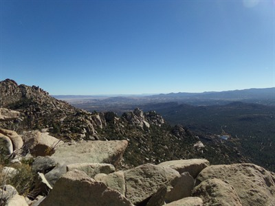
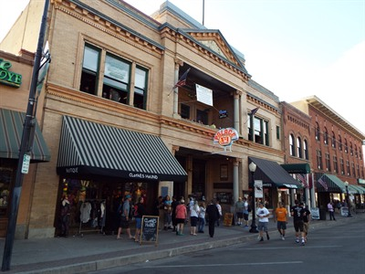
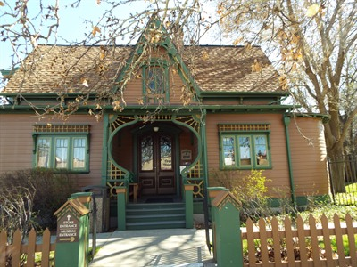
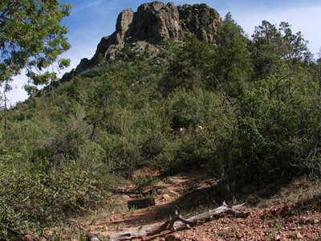
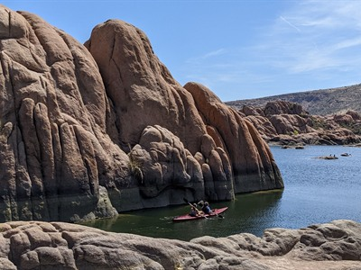
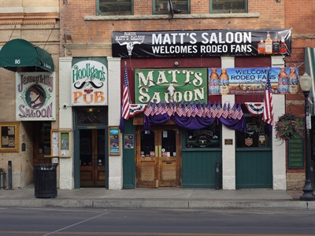

Prescott Travel Guide
Historic mountain town known for its preserved downtown, pine forests, outdoor recreation, and rich heritage rooted in early Arizona settlement.
Places to See in Prescott
.jpg){kind=link}
Courthouse Plaza
Historic public square featuring landscaped grounds, shaded walkways, and a prominent courthouse building surrounded by shops, events, and community gathering spaces.

LunchboxLarry, CC BY 2.0, via Wikimedia Commons; Image Size Adjusted
.jpg){kind=link}
Granite Mountain Trail
Forest and mountain trail leading through pine woodlands to scenic overlooks, rocky terrain, and expansive views of surrounding highlands.

Dough4872, CC BY-SA 4.0, via Wikimedia Commons; Image Size Adjusted

Museum of Indigenous People
Cultural museum preserving and showcasing Native American history, artifacts, and traditions through exhibits that highlight indigenous heritage and lifeways.

Marine 69-71, CC BY-SA 4.0, via Wikimedia Commons; Image Size Adjusted

Palace Saloon
Historic bar and gathering place known for its preserved Old West atmosphere, wooden interiors, and long-standing role in local history and social life.
Dough4872, CC BY-SA 4.0, via Wikimedia Commons; Image Size Adjusted
Peavine Trail
Scenic multi-use trail following a former railroad corridor along a lakeshore with gentle terrain and views of surrounding desert and forest landscapes.

Marine 69-71, CC BY-SA 4.0, via Wikimedia Commons; Image Size Adjusted

Sharlot Hall Museum
Historic museum complex featuring preserved territorial-era buildings, exhibits, and artifacts that illustrate early settlement and regional history.

Katie Tegtmeyer, CC BY 2.0, via Wikimedia Commons; Image Size Adjusted

Thumb Butte
Granite landmark hike leading to a rounded summit with panoramic views of surrounding forests, lakes, and rugged highland terrain.

John Fowler, CC BY 2.0, via Wikimedia Commons; Image Size Adjusted

Watson Lake
Scenic reservoir surrounded by granite boulders offering opportunities for kayaking, hiking, wildlife viewing, and photography.

Chris English, CC BY-SA 3.0, via Wikimedia Commons; Image Size Adjusted

Whiskey Row
Historic downtown street lined with preserved buildings, lively saloons, shops, and restaurants reflecting a rich Western heritage and social culture.
Dough4872, CC BY-SA 4.0, via Wikimedia Commons; Image Size Adjusted
Willow Lake
Granite-lined reservoir offering scenic views, outdoor recreation, and quieter surroundings ideal for hiking, kayaking, and wildlife observation.
How to Get There
From Phoenix (100 mi): Take I‑17 N to AZ‑69 N, then follow signs into downtown and the historic courthouse square district.
Overview
The city of Prescott offers a unique blend of Old West heritage and modern outdoor recreation set against a backdrop of forested mountains and scenic landscapes. Known as “Everybody’s Hometown,” it is a historic city in the central Arizona highlands, with a downtown district centered around a historic courthouse square and surrounded by preserved buildings, local shops, galleries, and the famed Whiskey Row.
Prescott is significant as Arizona’s first territorial capital, and it is popular because it offers a small-town atmosphere, cooler temperatures than the lower desert and a wealth of nearby lakes and trails. Visitors come for the Victorian architecture, the saloons and festivals, and the pine forests and granite boulders that surround the city, and many Phoenix residents use it as a seasonal retreat.
Prescott was founded in 1864 after gold was discovered in the area and was named for historian William H. Prescott. It served as the capital of the Arizona Territory from 1864 to 1867 and again from 1877 to 1889. A devastating fire destroyed much of Whiskey Row in 1900, and the rebuilt downtown still reflects that era. Prescott Frontier Days, which began in 1888, is billed as the world’s oldest rodeo.
The heart of sightseeing is Courthouse Plaza, a tree-shaded square with a historic courthouse and monuments, flanked by Whiskey Row and the Palace Saloon, Arizona’s oldest frontier saloon. Just outside town, Thumb Butte is a landmark rock formation with a popular loop trail, and the Granite Dells offer striking boulder landscapes around the lakes.
Prescott’s museums preserve its territorial and Native American heritage. The Sharlot Hall Museum includes the original Governor’s Mansion and historic buildings that tell the story of the territory, while the Museum of Indigenous People exhibits Native American art and artifacts. The Phippen Museum showcases Western art, and the Elks Theatre and local festivals keep the cultural calendar full.
Prescott is surrounded by outdoor recreation. Watson Lake and Willow Lake offer kayaking, fishing and walking among the Granite Dells, the Peavine Trail is a popular rail trail, and Granite Mountain and Thumb Butte offer more challenging hiking in the Prescott National Forest.
Prescott enjoys four mild seasons at about 5,400 feet. Summers are warm, with highs in the 80s and low 90s°F and brief monsoon storms in July and August. Winters bring highs in the 50s°F, freezing nights and occasional light snow, and spring and fall are especially pleasant.
This article uses material from Wikipedia and official city and tourism resources for Prescott, along with the Sharlot Hall Museum, Prescott Chamber of Commerce and Prescott Frontier Days visitor information, and National Weather Service climate data, which are released under the Creative Commons Attribution-Share-Alike License 3.0.